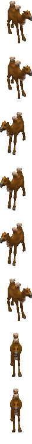
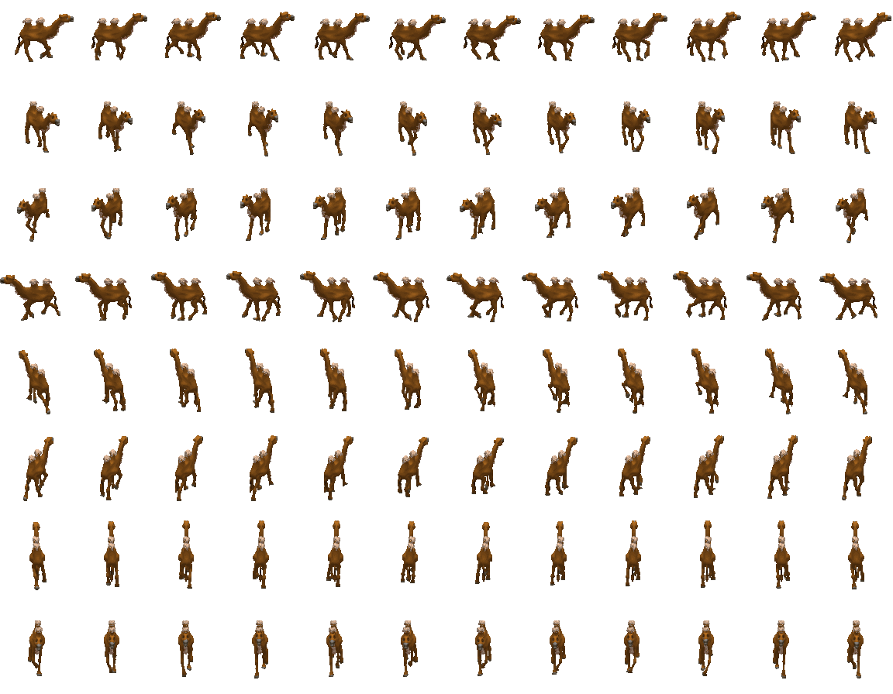

Tribe21 camels (Camels)Type / job ID48Animation job ID48Native namebaby_animalEnglishYoung AnimalSex / ageyoungNative allowedTrueParent chain (baseatomics)[48]Confidence{"sourceMapping": "SOURCE_COMPLETE", "framePixels": "PIXEL_CONFIRMED (per frame; see Catalogs/pixel_validation.csv)", "palette": "SOURCE_BODY_PALETTE", "shadow": "Coverage mask only; native destination darkening -> PRESENTATION_APPROXIMATION", "timing": "Native frame order and selection rules recorded; tick-to-seconds rate UNKNOWN"}Native references{"Game.exe": ["0x0048BD66 GraphicsAnimationRegistry_LoadFromCif", "0x0048CEA1 BobSeq global lookup", "0x00494AE6 frame selection", "0x004803D5 creation binding/palette", "0x00480576 job-change rebinding", "0x0048B258 random palette patches", "0x0049B930 shadow destination darkening"], "cpp": "MobileSpriteRegistry / MobileSpriteRuntimeOwner / ProductionWorldCompositor"}
Graphics bindings
| phase | section | inherited from | body variants (selector: body / shadow) | head variants | palettes | random palettes |
|---|---|---|---|---|---|---|
| initial | 0 | 0: CR_Ani_Body_00 / CR_Ani_Body_00_s atlas | bear01 |
Animations
Sheets: one row per native direction (0..7, only directions with frames), columns in native frame-list order, shared anchor. Colours use the declared base palette; runtime RNG palette ordinal, player colour and random patches are not applied (PRESENTATION_APPROXIMATION). Shadow masks are kind-2 coverage DATA.
atomic 2 animal_camel_baby_idle | BobSeq animal_camel_wait | section 972 | mode 0 | length 100
frame = min(count-1, floor(count*progress/duration)); duration from atomic length


direction frame lists (BOB ids)
[{"direction": 0, "bodyBobs": [388], "headBobs": [388], "status": null}, {"direction": 1, "bodyBobs": [388], "headBobs": [388], "status": null}, {"direction": 2, "bodyBobs": [381], "headBobs": [381], "status": null}, {"direction": 3, "bodyBobs": [381], "headBobs": [381], "status": null}, {"direction": 4, "bodyBobs": [381], "headBobs": [381], "status": null}, {"direction": 5, "bodyBobs": [388], "headBobs": [388], "status": null}, {"direction": 6, "bodyBobs": [395], "headBobs": [395], "status": null}, {"direction": 7, "bodyBobs": [395], "headBobs": [395], "status": null}]atomic 3 animal_camel_baby_idle | BobSeq animal_camel_wait | section 973 | mode 0 | length 100
frame = min(count-1, floor(count*progress/duration)); duration from atomic length


direction frame lists (BOB ids)
[{"direction": 0, "bodyBobs": [388], "headBobs": [388], "status": null}, {"direction": 1, "bodyBobs": [388], "headBobs": [388], "status": null}, {"direction": 2, "bodyBobs": [381], "headBobs": [381], "status": null}, {"direction": 3, "bodyBobs": [381], "headBobs": [381], "status": null}, {"direction": 4, "bodyBobs": [381], "headBobs": [381], "status": null}, {"direction": 5, "bodyBobs": [388], "headBobs": [388], "status": null}, {"direction": 6, "bodyBobs": [395], "headBobs": [395], "status": null}, {"direction": 7, "bodyBobs": [395], "headBobs": [395], "status": null}]atomic 4 animal_camel_baby_idle | BobSeq animal_camel_wait | section 974 | mode 0 | length 100
frame = min(count-1, floor(count*progress/duration)); duration from atomic length


direction frame lists (BOB ids)
[{"direction": 0, "bodyBobs": [388], "headBobs": [388], "status": null}, {"direction": 1, "bodyBobs": [388], "headBobs": [388], "status": null}, {"direction": 2, "bodyBobs": [381], "headBobs": [381], "status": null}, {"direction": 3, "bodyBobs": [381], "headBobs": [381], "status": null}, {"direction": 4, "bodyBobs": [381], "headBobs": [381], "status": null}, {"direction": 5, "bodyBobs": [388], "headBobs": [388], "status": null}, {"direction": 6, "bodyBobs": [395], "headBobs": [395], "status": null}, {"direction": 7, "bodyBobs": [395], "headBobs": [395], "status": null}]atomic 5 animal_camel_baby_idle | BobSeq animal_camel_wait | section 975 | mode 0 | length 100
frame = min(count-1, floor(count*progress/duration)); duration from atomic length


direction frame lists (BOB ids)
[{"direction": 0, "bodyBobs": [388], "headBobs": [388], "status": null}, {"direction": 1, "bodyBobs": [388], "headBobs": [388], "status": null}, {"direction": 2, "bodyBobs": [381], "headBobs": [381], "status": null}, {"direction": 3, "bodyBobs": [381], "headBobs": [381], "status": null}, {"direction": 4, "bodyBobs": [381], "headBobs": [381], "status": null}, {"direction": 5, "bodyBobs": [388], "headBobs": [388], "status": null}, {"direction": 6, "bodyBobs": [395], "headBobs": [395], "status": null}, {"direction": 7, "bodyBobs": [395], "headBobs": [395], "status": null}]atomic 6 animal_camel_baby_idle | BobSeq animal_camel_wait | section 976 | mode 0 | length 100
frame = min(count-1, floor(count*progress/duration)); duration from atomic length



direction frame lists (BOB ids)
[{"direction": 0, "bodyBobs": [388], "headBobs": [388], "status": null}, {"direction": 1, "bodyBobs": [388], "headBobs": [388], "status": null}, {"direction": 2, "bodyBobs": [381], "headBobs": [381], "status": null}, {"direction": 3, "bodyBobs": [381], "headBobs": [381], "status": null}, {"direction": 4, "bodyBobs": [381], "headBobs": [381], "status": null}, {"direction": 5, "bodyBobs": [388], "headBobs": [388], "status": null}, {"direction": 6, "bodyBobs": [395], "headBobs": [395], "status": null}, {"direction": 7, "bodyBobs": [395], "headBobs": [395], "status": null}]atomic 7 animal_camel_baby_idle | BobSeq animal_camel_wait | section 977 | mode 0 | length 100
frame = min(count-1, floor(count*progress/duration)); duration from atomic length


direction frame lists (BOB ids)
[{"direction": 0, "bodyBobs": [388], "headBobs": [388], "status": null}, {"direction": 1, "bodyBobs": [388], "headBobs": [388], "status": null}, {"direction": 2, "bodyBobs": [381], "headBobs": [381], "status": null}, {"direction": 3, "bodyBobs": [381], "headBobs": [381], "status": null}, {"direction": 4, "bodyBobs": [381], "headBobs": [381], "status": null}, {"direction": 5, "bodyBobs": [388], "headBobs": [388], "status": null}, {"direction": 6, "bodyBobs": [395], "headBobs": [395], "status": null}, {"direction": 7, "bodyBobs": [395], "headBobs": [395], "status": null}]atomic 9 animal_bear_eat | BobSeq animal_camel_wait | section 978 | mode 0 | length 20
frame = min(count-1, floor(count*progress/duration)); duration from atomic length


direction frame lists (BOB ids)
[{"direction": 0, "bodyBobs": [388], "headBobs": [388], "status": null}, {"direction": 1, "bodyBobs": [388], "headBobs": [388], "status": null}, {"direction": 2, "bodyBobs": [381], "headBobs": [381], "status": null}, {"direction": 3, "bodyBobs": [381], "headBobs": [381], "status": null}, {"direction": 4, "bodyBobs": [381], "headBobs": [381], "status": null}, {"direction": 5, "bodyBobs": [388], "headBobs": [388], "status": null}, {"direction": 6, "bodyBobs": [395], "headBobs": [395], "status": null}, {"direction": 7, "bodyBobs": [395], "headBobs": [395], "status": null}]walk 0 walk | BobSeq animal_camel_walk | section 1561 | mode 0 | length None
frame = frameTick % count (walk; caller frame tick)



direction frame lists (BOB ids)
[{"direction": 0, "bodyBobs": [471, 472, 473, 474, 475, 476, 477, 478, 479, 480, 481, 482], "headBobs": [471, 472, 473, 474, 475, 476, 477, 478, 479, 480, 481, 482], "status": null}, {"direction": 1, "bodyBobs": [483, 484, 485, 486, 487, 488, 489, 490, 491, 492, 493, 494], "headBobs": [483, 484, 485, 486, 487, 488, 489, 490, 491, 492, 493, 494], "status": null}, {"direction": 2, "bodyBobs": [423, 424, 425, 426, 427, 428, 429, 430, 431, 432, 433, 434], "headBobs": [423, 424, 425, 426, 427, 428, 429, 430, 431, 432, 433, 434], "status": null}, {"direction": 3, "bodyBobs": [435, 436, 437, 438, 439, 440, 441, 442, 443, 444, 445, 446], "headBobs": [435, 436, 437, 438, 439, 440, 441, 442, 443, 444, 445, 446], "status": null}, {"direction": 4, "bodyBobs": [447, 448, 449, 450, 451, 452, 453, 454, 455, 456, 457, 458], "headBobs": [447, 448, 449, 450, 451, 452, 453, 454, 455, 456, 457, 458], "status": null}, {"direction": 5, "bodyBobs": [459, 460, 461, 462, 463, 464, 465, 466, 467, 468, 469, 470], "headBobs": [459, 460, 461, 462, 463, 464, 465, 466, 467, 468, 469, 470], "status": null}, {"direction": 6, "bodyBobs": [507, 508, 509, 510, 511, 512, 513, 514, 515, 516, 517, 518], "headBobs": [507, 508, 509, 510, 511, 512, 513, 514, 515, 516, 517, 518], "status": null}, {"direction": 7, "bodyBobs": [495, 496, 497, 498, 499, 500, 501, 502, 503, 504, 505, 506], "headBobs": [495, 496, 497, 498, 499, 500, 501, 502, 503, 504, 505, 506], "status": null}]Atomics declared without a graphics record
81:animal_bear_attack
0x00494AE6: lookup fails along the parent chain, then retries selector 0 at the chain root.